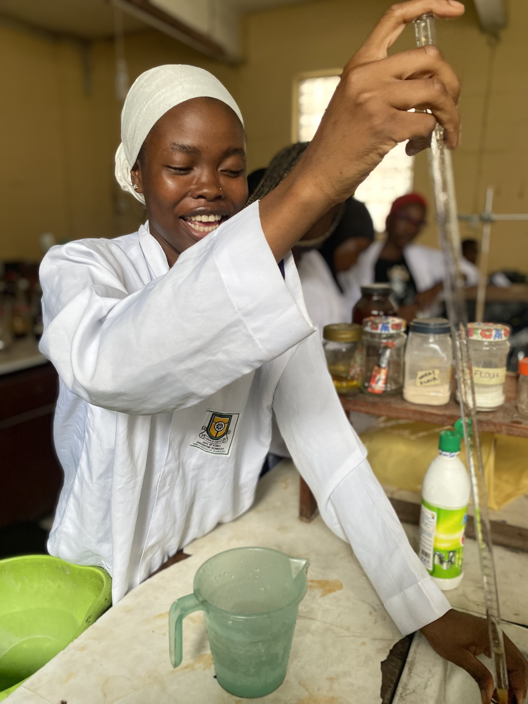

My names are Hammed Ahishat Oluwatoyin. I am 23 years old. A final year student of the great Yaba College of Technology. I'm studying Food Technology in the Department of Technology. I love studying this course because i'm a lover of good and healthy food.
Basically,I applied for this course thinking it would be more of cooking and maybe deriving new foods or ingredients. But i got to know during classes that we would be doing more of food production, processing, preservation and storage.
PRODUCTION: this has to do with producing semi-finished/finished product from raw materials. For example producing GARRI from CASSAVA etc.
PROCESSING: this is the process carried out from where the raw materials are gotten down till it reaches the final consumer. Harvesting the raw materials, cleaning/washing, cutting, draining, blending/crushing/grating, seiving/straining, drying, packaging, sealing, labeling.
PRESERVATION: this are the safety measures taking in preserving these food materials to last for a period of time. Foods can be preserved by refrigerating,freezing,sun drying,smoking,adding chemical preservatives.
STORAGE: this food materials are stored in a cool dry environment away from direct sunlight,weevils,pest and other small animals that can cause damage to the food.
So far i have enjoyed every bit of this course and i hope to learn more in my final year in school. And also with my tech knowledge i hope i can create webpages for people to see how they can produce,preserve,store their own food. Taking them through the whole process in details.

The picture above is a picture of me working happily in the laboratory
The picture above is a picture of me after working in the laboratory